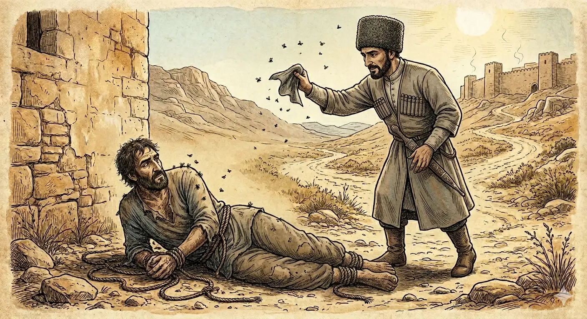

И.А. Дахкильгов. Хьехаме дувцарш - поучительные рассказы-притчи.
И.А. Дахкильгов. Хьехаме дувцарш - поучительные рассказы-притчи. Из ингушского фольклора.

Из харца дир Ӏа
Цхьа саг хиннав зуламе а питаме а валаш. Из кӀорда а ваь, наха вийхка Ӏовиллав из. Ди дӀайха долаш ха хинна. Мичара дера ца ховш, цу зуламхочоа ӀотӀахайр йоккхий мозий гурмат. Меттахьа ца хьовш, уллаш хиннав из зуламхо. Юхеда-а тӀехвоалача цхьан къонахчо, цу зуламхочох къа хийтта, тӀера мозий човхадаь лаьхкад. - Из харца дир Ӏа! - аьннад зуламхочо. - Мишта харца? Ӏазап озаш ма уллий хьо! - цецваьннав къонах. - Сона тӀахейша дагӀа мозий согара шоашта йоаккха лур яьккха а даьнна, дегаш а Ӏеба, дагӀаш дар. ХӀанз Ӏа уж човхадаь долаш, кхыдола, яькхагӀа дола мозий тӀакхолхоргда сона, сога кхаьча Ӏазап доккхагӀа хулийташ, - жоп деннад зуламхочо. Хьо бакълув, оалаш, дехке а ваьнна, из къонах дӀавахав.
РУССКИЙ
Нехорошо ты поступил
Жил некий неисправимый преступник. Надоел он людям. Они связали и положили его. А было это в жаркую пору. Нежданно откуда-то налетел рой мух, и они облепили преступника. Лежит он и не шелохнется. Проходил мимо какой-то сердобольный человек, и он согнал с преступника этих мух. "Нехорошо ты поступил, - сказал преступник, - зря их разогнал. Сидящие на мне мухи взяли с меня все, что можно было, успокоились и сидели себе тихо и мирно. Теперь на меня налетят другие, голодные мухи, и возобновятся мои страдания". Прохожий понял, что он неправильно поступил, пожалел о случившемся и пошел далее своей дорогою.
ENGLISH
That wasn't very nice of you
There was once a hardened criminal. People had had enough of him. They tied him up and laid him down. It was during a heatwave. Suddenly, a swarm of flies came out of nowhere and swarmed all over the criminal. He lay there without moving a muscle. A kind-hearted passer-by happened to walk past and shooed the flies away from the criminal. 'You've done the wrong thing,' said the criminal, 'you shouldn't have chased them away. The flies sitting on me had taken everything they could from me; they'd settled down and were sitting there quietly and peacefully. Now other, hungry flies will swarm over me, and my suffering will begin anew." The passer-by realised he'd done the wrong thing, regretted what had happened, and went on his way.
НОХЧИЙН
Иза харц дир ахь
Цхьа стаг хилла зуламе а питане а волуш. Иза кӀорд а вина, наха вихкина охьавиллина иза. Де довха долуш хан хилла. Мичара деан ца хууш, цу зуламхочунна тӀехиира даккхий мозийн жут. Меттах ца хьовш, Ӏуьллуш хилла и зуламхо. Йуххехула тӀехволучу цхьан къонахчо, цу зуламхочух къа хетта, тӀера мозий човхадина лаьхкина. - Иза харц дира ахь! - аьлла зуламхочо. - Муха харц? Ӏазап уьйзуш ма Ӏуллий хьо! - цецваьлла къонах. - Суна тӀехевшина дохку мозий соьгара шайна йаккхалур йаьккхина а дойлла, дегнаш а Ӏебина, дохкуш дара. ХӀинца ахь уьш човхадина долуш, кхиндолу, саьхьара долу мозий тӀекхелхара ду суна, соьга кхаьчна Ӏазап доккхах хулуьйтуш, - жоп делла зуламхочо. Хьо бакълуь, олуш, бехке а ваьлла, и къонах дӀавахна.
ПОГОВОРКИ
ВӀаьхийчоа къечун хьал довзаргдац, къечоа вӀаьхийчун хьал дика гу. Богачу не понять жизненные тяготы бедняка, бедняк же знает, насколько состоятелен богач. The rich man cannot understand the poor man's hardships, but the poor man sees clearly just how well-off the rich man is. Вехашволчун къечун хьал девзар дац, къечун вехашволчун хьал дика го.ДогӀах веддар кхуркхолга кӀала ийккхав. Бежавший от дождя попал под водопад. Running from the rain, he ran straight under a waterfall. ДогӀанах веддарг, чухчари кӀел иккхина.Дукъан дозал истара хов. Лишь быку известна тяжесть ярма. Only the ox knows the true weight of the yoke. Дукъан дозалла старна хаьа.Къел-моцал – цхьан юкъа хинна йоачан; майрал-денал – божаргбоаца Башлоам-корта. Голод и бедность – временная непогода; мужество и смелость – несокрушимый Казбек. Hunger and poverty are but a passing storm; courage and bravery are like the unshakeable peak of Kazbek. Къел-мацалла - цхьан йуккъа хилла йочана; майрал-доьнал - бужурбоцу Башлам-корта.МӀара кӀомалуча хьокхаш я. Ногтями скребут там, где чешется. One scratches with the nails wherever it itches. МаӀар кӀамлуче хьокхуш йу.Рузкъа ла халагӀа да къел ловчул. Труднее совладать с богатством, чем справиться с бедностью. It is harder to handle wealth than to endure poverty. Рицкъ лан халах ду къелла ловчул.Са дуача вӀоахалал сатийна къел тол. Лучше спокойная бедность, чем гложущее душу богатство. Peaceful poverty is better than wealth that gnaws at the soul. Са дуучу бахамал сатийна къелла тоьлу.Сихало са даьккхад, сабаро лоам (мохк) баьккхаб. Нетерпеливость (торопливость, суетливость) душу надорвала, а спокойствие гору одолело (страну покорило). Impatience wore out the soul; patience conquered the mountain (the land). Сихалло са даьккхина, собаро лам (мохк) баьккхина.Сискал йоацача цӀенах цхьа дика доал – мозийи дехкийи хилац. Дом, в котором нет достатка, имеет одно преимущество: в нем не водятся мухи и мыши. A house with no bread has one small advantage: no flies or mice trouble it. Сискал йоцучу цӀенах цхьа дика доллу - мозий а дехкий а хилац.ХӀама ховча нахах веттавеннар хьаькъала сов ваьннав. Умнее стал тот, кто вращался среди бывалых людей. One who mixed with experienced, knowledgeable people grew wiser for it. ХӀума хуучу нахах веттавелларг хьекъалан совваьлла.Хьайдар лораде, наьхадар ше уллача дита. Свое добро береги, чужое оставь в покое. Guard your own things, and leave others' alone. Хьайдерг ларде, нехадерг ша Ӏуьллучохь дита.ЦӀаьхха рузкъах визар хьаьрвоал: фарасташ санна ахчаш Ӏокхувс. Внезапно разбогатевший шалеет: деньги разбрасывает, словно овечий помет. One who suddenly grows rich loses his head, scattering money about like sheep droppings. ЦӀаьххьина рицкъанах вуьзнарг хьераволу: луьста санна ахчанаш охьакхуьйсу.